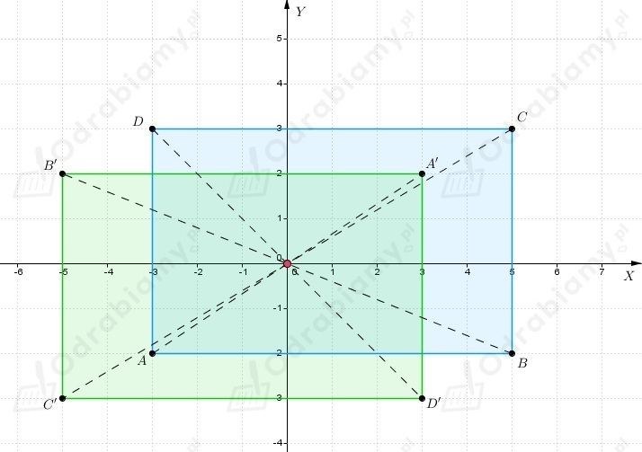
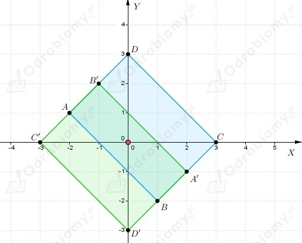
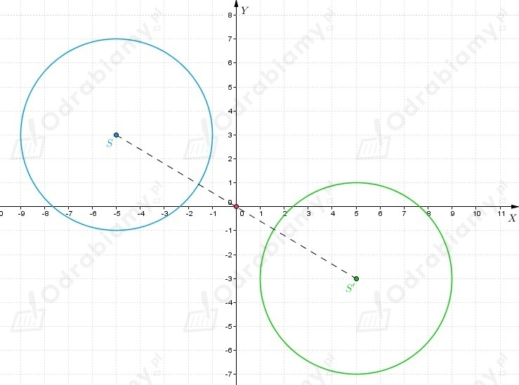

| Punkt symetryczny do punktu A(x, y) względem początku układu współrzędnych jest punkt A'(-x, -y). Czyli współrzędne punktu A' są liczbami przeciwnymi do współrzędnych punktu A. |
a)
Wiemy, że punkty
są wierzchołkami trójkąta ABC.
Wierzchołków trójkąta A'B'C', który jest symetryczny do trójkąta ABC względem
początku układu współrzędnych, to punkty o współrzędnych
b)
Wiemy, że punkty
są wierzchołkami trójkąta ABC.
Wierzchołków trójkąta A'B'C', który jest symetryczny do trójkąta ABC względem
początku układu współrzędnych, to punkty o współrzędnych
a)
Wiemy, że punkty
są wierzchołkami prostokąta ABCD.
Wierzchołki prostokąta A'B'C'D', który jest symetryczny do prostokąta ABCD względem
początku układu współrzędnych, to punkty
Prostokąty w układzie współrzędnych

Pole części wspólnej prostokątów, to pole prostokąta o bokach długości 4 i 6.
b)
Wiemy, że punkty
są wierzchołkami prostokąta ABCD.
Wierzchołki prostokąta A'B'C'D', który jest symetryczny do prostokąta ABCD względem
początku układu współrzędnych, to punkty
Prostokąty w układzie współrzędnych

Zauważamy, że
Natomiast
Pole części wspólnej prostokątów, to
Zauważamy, że środek okręgu K, to punkt S(-5, 3).
Zatem środek okręgu K' symetrycznego do okręgu K względem
początku układu współrzędnych znajduje się w punkcie S'(5, -3).
Promień okręgu nie zmienia się.
Wnioskujemy, że
Okręgi w układzie współrzędnych
